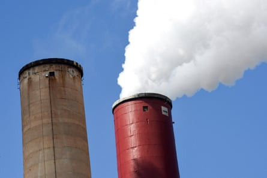

An industry-backed researcher who has forged a career sowing doubt about the dangers of pollutants is attempting to use artificial intelligence (AI) to amplify his perspective.
Louis Anthony “Tony” Cox Jr, a Denver-based risk analyst and former Trump adviser who once reportedly claimed there is no proof that cleaning air saves lives , is developing an AI application to scan academic research for what he sees as the false conflation of correlation with causation.
Cox has described the project as an attempt to weed “propaganda” out of epidemiological research and perform “critical thinking at scale” in emails to industry researchers, which were obtained via Freedom of Information Act requests by the Energy and Policy Institute, a non-profit advocacy group, and exclusively reviewed by the Guardian.
He has long leveled accusations of flimsiness at research linking exposure to chemical compounds with health dangers, including on behalf of polluting interests such as cigarette manufacturer Philip Morris and the American Petroleum Institute – a fossil fuel lobbying group he has even allowed to “copy edit” his findings . (Cox says the edit “amounted to suggesting a small change” and noted that he has also obtained public research funding.)
Cox has previously done some work for the tobacco industry.Photograph: Oliver Helbig/Getty Images
Both the tobacco and oil industries have a history of weaponizing scientific uncertainty , experts say, with some arguing that similar tactics drive the Trump administration’s current deregulatory efforts. The president’s May “gold standard” science order, for instance, empowered his appointees to “correct scientific information” and “discipline” those who breach the administration’s views, prompting outrage from some scientists.
Cox has obtained funding to develop the new AI reviewer from the American Chemistry Council (ACC), the nation’s largest chemical industry advocacy group, which counts oil and chemical giants such as Exxon and DuPont as members.
Experts say the ACC’s sponsorship raises questions about whom the project will benefit.
Asked about these concerns, Kelly Montes de Oca, spokesperson for the ACC, said: “This research has the potential to support scientific understanding and analysis of chemical exposure and human health, enhance transparency and reproducibility, advance the safety of chemical products and processes, and inform science-based global regulatory approaches.”
Cox said in an email to the Guardian that his assistant “is specifically designed to be helpful to those who wish to understand the objective implications of data without any distortions from the kinds of well-known human heuristics and biases that make objective analysis difficult for humans”.
“My work aims to help anyone interested in using sound technical methods to pursue scientific truth,” he added. The questions sent to him by the Guardian contained “many fundamental inaccuracies”, he said.
Cox said the tool is currently being tested on submissions to academic journals – including Risk Analysis, which he edits – to evaluate research submissions before they are submitted to the peer review process.
Asked for a response to concerns about the project’s funding, Cox said that he has publicly acknowledged the ACC’s support in all relevant publications and said the tool “has no axe to grind and no positions to push”.
But the ACC is not a neutral force, said Chris Frey, the associate dean for research and infrastructure at the North Carolina State University’s College of Engineering who chaired the Environmental Protection Agency’s clean air scientific advisory committee from 2012 to 2015.
“They lack impartiality in that they want to minimize regulatory burden on their members,” said Frey.
ChatGPT
In mid-February of 2023, Cox struck up a conversation with the AI assistant ChatGPT. He later sent the chat to his University of Colorado email address, which is subject to public record request laws .
After asking the chatbot to write a sonnet about Abraham Lincoln, he turned the conversation to a more serious topic: the tiny toxic particles known as PM2.5, also known as fine particulate matter.
Scientists have long found links between PM2.5 exposure and a wide variety of health concerns , from asthma and lung disease to heart attacks. But for years, Cox has raised uncertainty about those connections, publishing work “re-assessing” the mortality risks associated with exposure to the pollutant in animal agriculture and challenging the link between PM2.5 from gas stoves and childhood asthma .
On that February day, Cox asked ChatGPT a simple question: “Does PM2.5 cause lung cancer?” The bot responded by noting the “strong scientific evidence” demonstrating the link.
A seemingly dissatisfied Cox went on to ask if it is “known with certainty that PM2.5 causes lung cancer”, calling on ChatGPT to identify potential confounding factors in the research on the air pollutant. He took brief tangents to pose riddles to the bot and to request additional sonnets – including one about PM2.5 itself, yielding the line “no nose can catch you, for you are so fine”.
Eventually, Cox asked ChatGPT whether the association between PM2.5 and lung cancer can be explained by a “combination of residual confounding, measurement errors, and modeling biases”. The bot maintained that “the observed association is likely to be real and not fully explained by these factors”.
From a conversation Cox had with ChatGPT in February 2023

A document showing the conversation between Cox and ChatGPT.
Write a sonnet about PM2.5 and lung cancer Oh, deadly PM2.5 in the air, So small and yet so full of poison’s might, A silent killer that we cannot bear, You infiltrate our lungs both day and night
At the time of the conversation, Cox had already been interested for years in making “smarter and more trustworthy AI”, he told the Guardian. He had published a paper on the topic in 2021, and the following year – months before ChatGPT’s release – had begun developing his own AI tool. The ACC had partly funded that work, he said.
Cox also had a meeting with the Long-Range Research Initiative, a lobbying group focused on “innovations in chemical safety science” which includes Exxon, just hours before he had the February 2023 ChatGPT conversation, the emails show.
In an email seeking funding to develop an AI tool, Cox seemingly referenced that “long experimental chat”. Among the recipients were George Maldonado, the editor of the academic journal Global Epidemiology, and ACC toxicologist Rick Becker.
Cox wrote in the email that his questions eventually led ChatGPT to “concede that we don’t actually know that PM2.5 at current ambient levels causes lung cancer in humans – but it was a struggle to get there!” The chatbot “does an excellent job of reflecting the ‘party line’ that is most prevalent on the web, fallacies and all”, Cox continued in the email. But new AI software could be used to do “‘critical thinking at scale’ (if I may be grandiose!)”, he said.
The following day, Cox emailed a larger group of researchers, including Becker and two ExxonMobil scientists. ChatGPT, he wrote, “seems to me to display a very strong starting bias that can eventually be overcome by sufficiently patient questioning”. That bias involved conflating “evidence of association with evidence of causation”, he said.
From an email Cox sent to industry researchers in February 2023
We can help bend applications of this technology toward scaled-up critical thinking instead of scaled-up groupthink and propaganda
“I am hoping to build a critical mass of interest and get some funding in this area so that we can help bend applications of this technology toward scaled-up critical thinking instead of scaled-up groupthink and propaganda,” he added.
Cox’s past work may shed light on the “groupthink and propaganda” that his work questions. In one 2023 study he co-authored, he found that exposure to the “forever chemical” known as PFOA can occur in safe doses. The research was conducted with the organization Toxicology Excellence for Risk Assessment, headed by the contentious toxicologist Michael Dourson , who has also received funding from chemical makers.
Another study the same year, which Cox co-authored with a Chevron toxicologist, said molybdenum – a petrochemical present in lubricants Chevron produces – was “not a risk factor for changes in serum testosterone”. And in a third 2023 study , Cox said his research found no link between childhood asthma and gas stove exposure.
A growing body of research shows gas stoves emit toxic compounds even when not in use.Photograph: Jena Ardell/Getty Images
At a 2018 conference, Cox also claimed there is no proven connection between air pollution and respiratory problems or heart attacks, while he said in a 2012 paper – funded in part by tobacco company Philip Morris – that he found smoking half a pack of cigarettes daily did “not appear to be associated” with increased risk of coronary heart disease.
In an email to the Guardian, Cox said the methods he applies are “drawn from the scientific mainstream – not from ideology or partisanship”.
“Some critics have mischaracterized my work as an attempt to delay regulation or promote industry interests. That is not true,” he said. “I do not advocate for or against any policy outcome. I advocate for grounding decisions in empirically supported causal understanding.”
Cox served as an adviser to policymakers in his role on an EPA advisory committee. He has also argued against the proposed tightening of a regulation at an Occupational Safety and Health Administration hearing, in his capacity as an ACC consultant.
Adam Finkel, a risk analyst and environmental health sciences professor at the University of Michigan, said though he believes Cox to be in some ways a “genius” and skilled risk analyst, he also seems to be “deceiving himself and everyone else” about the impacts of bias on his research.
“How you interpret any information is by imposing your preferences,” said Finkel, who is also a former director of health standards programs at the US Department of Labor’s Occupational Safety and Health Administration. “There is no possible way to get around imposing some set of preferences.”
Some degree of uncertainty is inherent to scientific analysis. But when assessing whether or not there is a causal effect between exposure to something potentially harmful, Finkel said, Cox looks for “perfect certainty”, which “can lead to years and decades of doing nothing and harming people while you wait for the certainty to come”.
While Finkel has “fundamental belief that our system is under-protective” when it comes to public health, Cox seems to believe the opposite.
Asked for comment, Cox said: “I have never advocated that we should not act until we have certainty. Rather, I have advocated choosing to act on the best available information.” He said his work has acknowledged causal relationships between smoking and lung cancer , asbestos exposure and mesothelioma , and, in 2011, crystalline silica exposure and lung disease .
But at the Occupational Safety and Health Administration hearing at which he spoke in 2014, Cox asserted on behalf of the ACC that the federal government had not demonstrated a link between certain levels of silica exposure and lung disease.
“He’ll accept that at very high doses, this stuff is bad for you,” said Finkel. Policy is meant to ensure that level of exposure doesn’t occur, he added.
‘Socratic dialogue’
Maldonado, editor of Global Epidemiology, responded positively to Cox’s AI assistant proposal, the emails from 2023 show. Within weeks, his journal published another one of Cox’s conversations with ChatGPT in his journal.
“The purpose of this comment is to provide an example of a Socratic dialogue with ChatGPT about the causal interpretation of an important epidemiological association between exposure to fine particulate matter air pollution (PM2.5) and mortality risk,” says the paper, which states that it was partly funded by the ACC and counted climate denier Steve Milloy as one of its reviewers.
When the bot said “it is well-established that exposure to ambient levels of PM2.5 does increase mortality risk”, Cox accused it of confusing evidence of association with evidence of causation. Eventually, ChatGPT said: “It is not known with certainty that current ambient levels of PM2.5 increase mortality risk.”
But the distinction between correlation and causation is “epidemiology 101”, said Gretchen Goldman, president of the scientific advocacy group Union of Concerned Scientists, who co-authored a 2019 paper critiquing Cox.
“From day one of a study, researchers consider, analyze and guard against possible confounding factors,” said Goldman. “This uncertainty is always present, but that of course doesn’t mean the research is wrong.”
Cox has critiqued some proposals to strengthen controls on pollution on the grounds of imperfectly demonstrated causality.Photograph: Paul Hennessy/SOPA Images/LightRocket via Getty Images
Demonstrating clear causal links between pollutants and health impacts can be complicated, especially because unlike in testing pharmaceuticals, it can be difficult and unethical to establish control groups for comparison.
“If you’re looking at the effects on an actual population that’s been exposed in real life to pollutants, you can’t do those controlled types of studies,” said Frey of North Carolina State University’s College of Engineering. “That leads to thinking about ways to make inferences from real world data that might, for example, mimic a random, controlled trial.”
But though demonstrating true causality can be complex, Cox has long overstated scientific uncertainty while downplaying evidence, said Frey.
“Science denialism often sounds convincing because it contains some truthiness to it or elements of truth or elements of valid points, but it’s often based on either overemphasis or omission and doesn’t portray a full picture,” he said.
As chair of EPA’s clean air scientific advisory committee during Trump’s first presidential term, for instance, Cox proposed eliminating all research from the agency’s consideration that did not demonstrate “manipulative causation”, wherein intervention on one variable would change the probability of an outcome. “I see it as being about using widely accepted, non-controversial principles of causal analysis and inference,” Cox said of his push for this change.
But in effect, the alteration would have dramatically and unnecessarily “winnowed down” the body of evidence to which the EPA could have referred and removed research from consideration which “in fact robustly” demonstrates that certain compounds cause harm, Frey said.
“That effort and his work generally have not been viewed as compelling by the mainstream scientific community,” he added.
Industry interests have promoted uncertainty to defend their business models, Frey said. The oil sector, for instance, had strong evidence that fossil fuels warmed the planet as early as the 1950s yet publicly called the link “weak” or even “non-existent” for decades. Cigarette manufacturers also long promoted the idea that the connection between cigarettes and health harms was tenuous, with one tobacco executive even saying in 1969 that “doubt is our product”.
“It’s a well-worn tactic,” said Frey.
Industry collaboration
Cox kept corresponding with industry scientists about his new tool, all the while holding similar conversations with ChatGPT about causation in research. In May 2023, for instance, Cox posed questions about the causal claims in a recent landmark study linking gas stove exposure to childhood asthma , the emails show.
Later that month, Cox sent a slideshow to the ACC’s Becker and several other industry-related scientists. His reviewer, it showed, had identified issues with the recent gas stoves study, and another major assessment which linked PM2.5 exposure to cardiovascular issues .
This tool could “benefit authors, reviewers, reporters, media (if we make the summary reports good enough), and decision-makers and policymakers trying to evaluate studies and decide how trustworthy their methods and conclusions are”, Cox said.
In a proposal sent days later, he added that it is “probably good enough to be commercially useful”.
In July 2023, Cox presented his new tool to members of the Long-Range Research Initiative – which also funded his earlier work – including to representatives from Exxon.
Ahead of the meeting, Cox sent the group a conversation he had with the reviewer, which used a 2020 paper demonstrating a causal link between PM2.5 and mortality as an example of the kind of conflation his tool could spot.
Maldonado, the editor of Global Epidemiology, offered to give the tool a “friendly trial” at his journal.
From an email Cox sent to the American Chemistry Council’s Becker in July 2023

A document showing the conversation between Cox and ChatGPT
Such automated critical reasoning can help to thoroughly review, and potentially to improve, the scientific claims and scientific integrity of causal reasoning and presentation of evidence underlying many regulatory risk assessments
After the meeting, Cox sent a two-part project proposal to the ACC. “Such automated critical reasoning can help to thoroughly review, and potentially to improve, the scientific claims and scientific integrity of causal reasoning and presentation of evidence underlying many regulatory risk assessments,” Cox said.
For part one, an academic paper on the project which would be published in Maldonado’s Global Epidemiology, he asked for $75,000. For part two, a pilot testing the reviewer on submissions to the same journal, he asked for $80,000. In his response to questions from the Guardian, Cox confirmed the ACC’s funding but not a dollar amount.
Cox published the “phase 1” paper about his new AI reviewer in the journal Global Epidemiology in June 2024.
He also appears to have secured $40,000 for Global Epidemiology to participate in the second phase, but the partnership “did not come to fruition” because too few authors were willing to participate, Cox told the Guardian. Maldonado did not respond to a request for comment.
By April 2024, Cox told the ACC’s Becker in an email that his reviewer tool was “ready for a demo”, claiming its reviews are “already better than many human reviews, although not as on-point and insightful as the best human reviews”.
But in an email last May to toxicologist Ted Simon , Cox said “the real goal” of the tool was to enable it to do literature reviews, examining wide swaths of published information in a particular subject area. That month, ExxonMobil scientist Hua Qian ran a test of the tool.
Now, Cox told the Guardian, the tool was being tested by researchers submitting work to the journal he edits, Risk Analysis, and other academic journals, including Decision Analysis. About 400 people have tested the tool so far.
Itai Vardi, a manager at the Energy and Policy Institute, who shared the trove of emails with the Guardian, said the project could have disastrous consequences for academia, particularly epidemiology.
“AI language models are not programmed, but built and trained,” he said, “and when in the hands and funding of this industry, can be dangerous as they will further erode public trust and understanding of this crucial science.”
‘Sound science’
Asked about critics’ concerns about the ACC’s funding for the project, Cox said: “People who are concerned about the use of sound science in areas where politics has dominated might understandably be concerned about the use of such tools.”
But people should “favor the development” of the AI tool if they want to “apply sound science to improve our understanding of the world and how to act more effectively”, he said.
“The fact that the ACC … are starting to step up to the challenge of designing AI to increase the objectivity, transparency, and trustworthiness of scientific research seems to me to be a great public benefit,” he said.
But the ACC “cannot be trusted as a source of ‘objectivity, transparency, and trustworthiness of scientific research’,” said Frey, when that research is “aimed at understanding the human health harms caused by chemicals manufactured by their members”. And for him, Cox’s use of the term “sound science” also prompted concern.
“‘Sound science’ is a term popularized by the tobacco industry as part of a campaign to create burdens of proof far beyond those required for policy decisions,” Frey said. Indeed, in the 1990s, Philip Morris – for whom Cox has done research – ran a 10-year “sound science” public relations campaign to sow doubt about the harm cigarettes cause.
In an email to the Guardian, Cox noted that “reputable scientists” use the term to refer to reliable, verifiable research that follows accepted scientific methods. He dismissed the idea that causation can be difficult to prove in epidemiology.
Some public health experts are alarmed about Cox’s AI tool.Photograph: Toshi Sasaki/Getty Images
“My response to people who are concerned that we should treat evidence of repeated associations as if it were evidence of interventional causality is that this outdated style of thinking is tremendously harmful and counterproductive in designing effective measures to successfully protect human health and safety,” he said.
Asked for examples of harmful policies created by overreliance on association, Cox named several scientific studies, including a 1996 experiment which was stopped because interventions that were expected to slash participants’ chances of getting lung cancer “based on repeatedly observed associations” actually increased that risk.
He did not name any policies.
Other experts note that regulations and policies are not meant to require proof of causality – the Clean Air Act, for instance, says standards “allowing an adequate margin of safety … are requisite to protect the public health”.
Cox, however, has critiqued proposals to strengthen controls on pollution on the grounds of imperfectly demonstrated causality. It is the sort of logic that Cox’s new AI tool could automate, which could benefit corporate interests, said Vardi of the Energy and Policy Institute.
“Instead of having scientists-for-hire do that denial work, which advances their economic interests, the industry is funding efforts to outsource it to a machine in order to give it an image of unbiased neutrality,” Vardi said.
Cox, for his part, said: “A scientist-for-hire could use such an AI system to check whether the conclusions affirmed or denied in a scientific paper follow from the data and analyses presented, but my AI systems don’t concern themselves with affirming or denying any specific positions or conclusions. That is left for people to do.”
Though Cox claims his AI tool is neutral, Finkel said his early ChatGPT conversations shed light on its potential dangers.
“He was torturing the machine only along one set of preferences, which is: ‘Can I force you to admit that we are being too protective?’” Finkel said. “That’s not science.”
Cox said his conversations with ChatGPT aimed to uncover hidden uncertainties. But a different chatbot could be trained to identify instances in which government is “under-regulating”, Finkel said.
On an academic level, Cox’s interest in certainty might seem reasonable, but in the real world, it is dangerous to apply his standard of causality, said Finkel.
“For almost anything that we now know is harmful, there was a period in time when we didn’t know that,” he said. If Cox’s standards are taken seriously, he added, we could see “generations, decades of misery while we wait for him to be satisfied”.